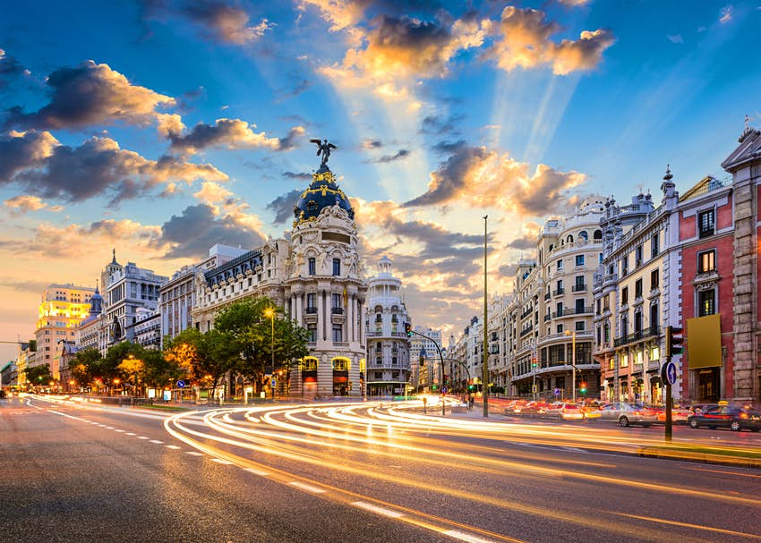
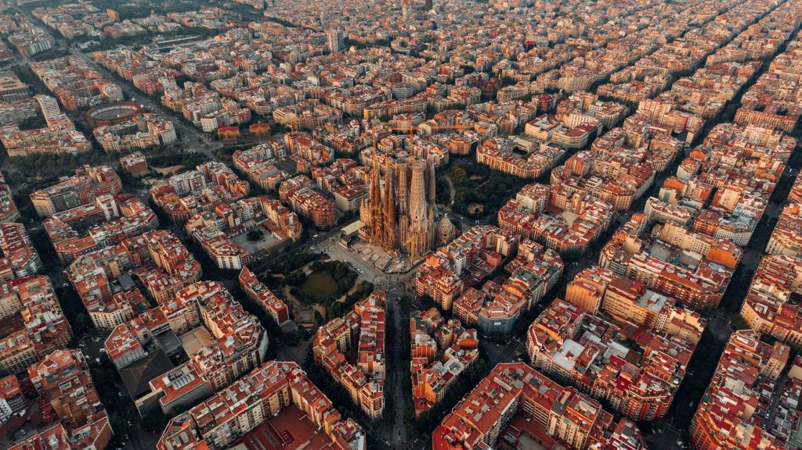

Item1
Paris is truly one of the most magical and loved places in the world. Wether it be walking down the Champs Elysées, taking a look at the Notre dame,
admiring art at the Museé d'Orsay or the Louvre, or visiting the world-famous Eiffel tower, Paris is sure to fulfill your traveling needs no matter you do.
Plus, book now in order to save up to 10% in your plane ticket!

Item2
Madrid is a city like no other. It may look like a urban and beautiful city at first, but once you start walking down its many alleyways,
visiting the different neighborhoods and observing all the small details present in every wall, garden and architecture, will you realize that one must visit
Madrid many, many times in order to fully see and appreciate it all. That isn't even mentioning the incredible transformation it experiences during the night,
it feels like a new place. If you're looking for an intricate city with plenty of night life, Madrid is for you.

Barcelona
There are almost an unlimited amount of things to do; you will never get tired. You can visit the world-known church of the Sagrada Familia,
visit Dali's Park Güel or La Pedrera or Casa Batlló, taking a stroll down Las Ramblas...or just enjoying the beautiful city, with its unique architecture,
marvellous food and wonderful people. There are so many things to see, so much time to spend,
so much food to eat, it truly is a city with unlimited opportunity.
